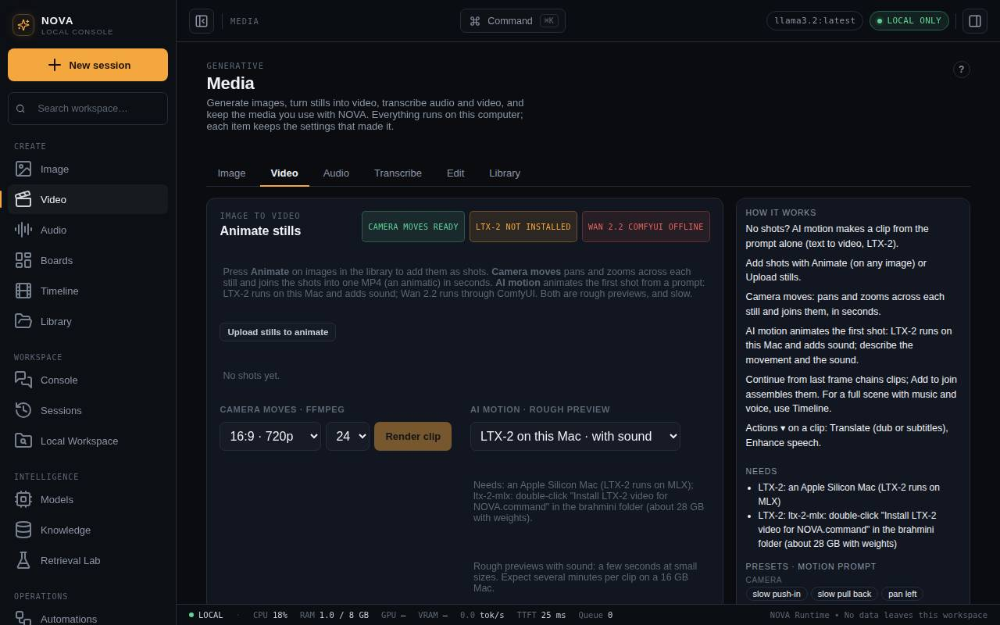

Video
Animate stills with camera moves or AI motion (LTX-2 with sound, or Wan 2.2), make video from a prompt, and chain clips together.

Press Animate on any library image, or Upload stills to animate, to add shots. Then choose an engine.
Camera moves
Needs ffmpeg, no AI model. Pick a push in, pull out, pan or tilt and a length for each shot, reorder shots, choose a frame (16:9, 2.39:1 scope, 1:1, 9:16) and frame rate, then Render. One shot makes a clip; several make an animatic joined in order. Renders in seconds.
AI motion with LTX-2 (with sound)
The default on Apple silicon. The first shot and your prompt (describe the motion and the sound, for example "waves crash, gulls call") go to LTX-2 running on this computer, and the clip comes back with sound.
- Install it with Install LTX-2 video for NOVA.command in the brahmini folder. It downloads only what Maataa uses: about 28 GB for Fast clips. For Better clips run
bash scripts/install-ltx-mac.sh --betterinnova-console(another 19 GB). - Clips are 1–8 seconds at up to 960×544. Maataa never lets LTX-2 start a download on its own.
- Set
LTX_MLX_BINorLTX_MLX_MODELif you installed it elsewhere.
With no shots added, AI motion becomes Make video from prompt: LTX-2 makes the whole clip, with sound, from the prompt alone.
AI motion with Wan 2.2 (no sound)
Choose it in the AI motion list. It runs Wan 2.2 5B in your local ComfyUI. ComfyUI needs three files (about 21 GB together): wan2.2_ti2v_5B_fp16.safetensors in models/diffusion_models, umt5_xxl_fp16.safetensors in models/text_encoders (the fp8 version does not run on Apple silicon) and wan2.2_vae.safetensors in models/vae. Add Wan video models.command fetches them; Maataa lists anything missing. Clips are 1–5 seconds at 24 fps; start at 480p and 2 seconds, because each second can take several minutes on a Mac.
Memory safety
Image and video models share the computer's memory. Maataa runs one image or video job at a time and unloads chat models (and ComfyUI's models, before LTX-2) when a job starts. On 16 GB Macs it keeps LTX-2 to 480p, 5 seconds and low-memory mode, and it does not start Wan 2.2 on Macs with less than 32 GB (it can freeze and restart the Mac; NOVA_ALLOW_WAN_LOW_RAM=1 overrides). Avoid running other heavy apps during a clip.
Continuity and joining
- Continue from last frame on a clip saves its final frame as the next shot, so the next AI clip starts exactly where the last one ended.
- Add to join on clips, in order, then Join clips makes one video.
- Keeping the same character across unrelated shots still depends on your keyframes showing the same character (a LoRA helps; see Images).
Videos play in the library, can be downloaded, and keep a recipe. MP4 and MOV uploads are accepted too. For cutting a scene with sound, use the Timeline.